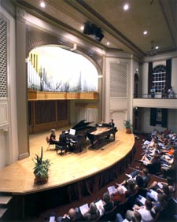

The Department of Music, accredited through the National Association of Schools of Music, supports the mission of Linfield College as a liberal arts institution. Within the context of a Bachelor of Arts degree, Linfield provides a rigorous music program of appropriate size and scope to meet the needs of its students, and additionally provides educational and concert/recital offerings to the college community and the community-at-large.
The music program at Linfield is a synthesis of liberal arts education and professional studies. It is designed to provide the richness and the breadth of understanding needed for worthwhile living along with providing the special skills and understanding necessary to becoming a creative artist.
The music student's liberal arts education begins with participation and performance in musical activities. The curriculum seeks to help students attain:
An environment of strong caring, coupled with high expectation, exists for building confident, qualified, and self-actualizing musicians. Individual attention and personal advising are high priorities. In all music classes there is an excellent student/teacher ratio.
Students participating in the vibrant music program at Linfield have enormous choices, enjoy the attention and caring which is evident campus wide, and receive an education which prepares them to enter the professional arena and to meet the challenges of a pluralistic world. The insight and depth of human understanding students gain enhance the opportunity for personal success and significant service to the broader community.
The following opportunities are open to all students on campus. An asterisk indicates those ensembles requiring an audition.